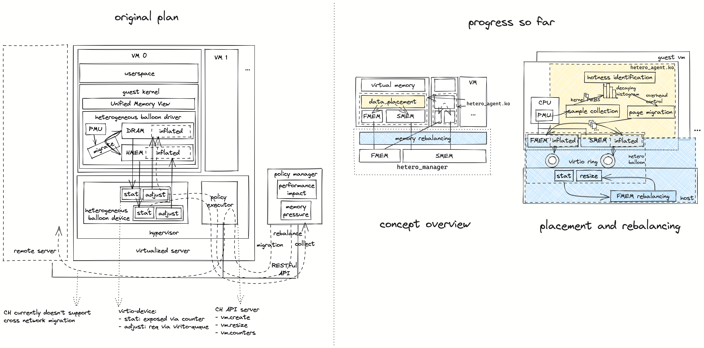

What has been done until now?

From what perspective should we write the paper?
Micro to macro
- Focus on virtual machines only: we solve the same problem as in vTMM/HeMem/Autotering... but with slight different techniques or combinations
- EPT-agnostic: show our novelty from the unique technical properties. However, our work can only be called a simulation as we cannot implement bare-metal virtualization.
- FMEM rebalancing: slight change in context: from single VM to a cluster of VMs.
On what metric should they be judged? 1
- Novelty: is the survey thorough enough? are ideas consise and significant enough?
- Reality: implemented or not? if not are ideas of enough quality?
- Lessons: what can be learnt? are they generally applicable?
- Choices: why shouldn't we choose the alternatives?
- Context: are assumptions made realistic? is the work sensitive to the assumptions?
- Focus: are only the unusual parts described enough? are backgrounds just enough?
- Presentation: are ideas organized clear and logical?
- Writing: clear? concise? spelling? grammer?
Focus on VM
Strategy: distinguish detailed differences compared to existing works.
Experiment design:
Focus on EPT-agnostic
Strategy: discuss importance of EPT-agnostic (why) and our solution (how) vTMM cannot function without EPT, because the main techniques it uses is PML which is only available under EPT-enabled environment. However, this can only be hidden thread of the final paper. We are only theoritically applicable under bare-metal environment, no hardware nor implementation is done.
Focus on rebalancing
EuroSys'23 has a paper discussing resource allocation in serverless environment. 2 The main problem is coupled memory and CPU allocation, which leads to greater execution cost. This paper also shows a result of 40% cost reduction by flexible allocation.
Introducing heterogeneous memory into serverless infrastructure can also address the imbalance between CPU and memory and achieve cost reduction. But the differences compared to ours include:
- This paper talks about cost from the user's perspective. However, if using HM, it's transparent to the user, a new pricing model needs to be proposed.
- The angle of the problem is not ideal, we should come up with a better one rather than "imbalanced resource allocation".
(Work estimation) Further survey and implementation are needed to support the novelty and reality of the paper. Implementation work other than already needed scheduler design are estimated to be minimal. AWS has open-sourced a middleware 3 to bridge between predominant container based serverless runtime with microVM-based execution environment. Our balloon device are implemented in cloud-hypervisor which shares great similarity to AWS's firecracker. We can either add support for 3 in cloud-hypervisor or port our balloon device code into firecracker. However, if the later one is chosen, additional adaptation work is also needed in the testing framework. This doesn't mean our existing testing infrastructure is enough for the former one. We still need to find proper serverless benchmarks to be able to demonstrate the effectiveness of our solution.
How can we demonstrate the superiority?
Will the problem be the same if the runtime is container instead of microVM?
Decision
We decide to focus on VM first and use EPT-agnostic as a design consideration.
Plan
What to test?
Micro benchmarks
- Collection (kernel PEBS)
- What is the cost for collecting one access sample?
- Identification (SDH)
- How accurate is the identified working set compared to ground truth?
- Migration (no special design)
- Do we really need special migration design?
- What is the marginal cost?
- How often does migration actually happen?
- How much data to migrate each time?